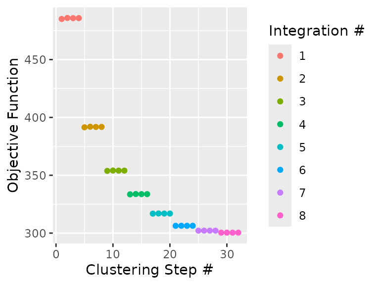
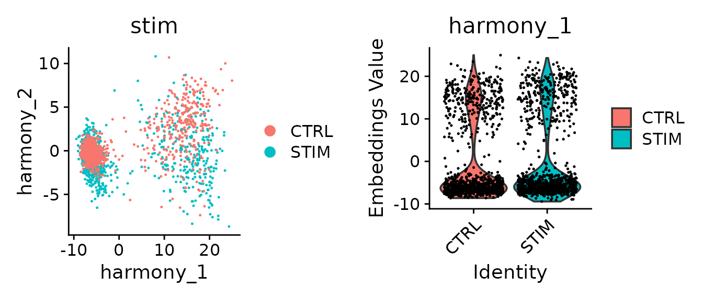
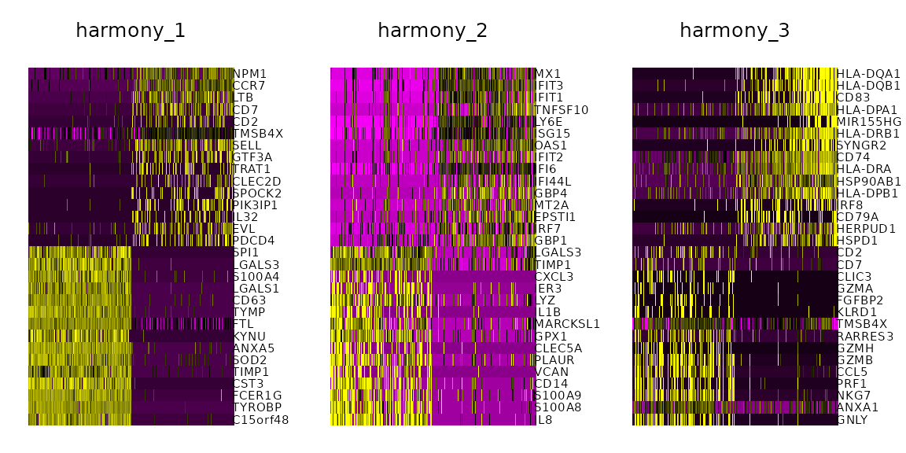
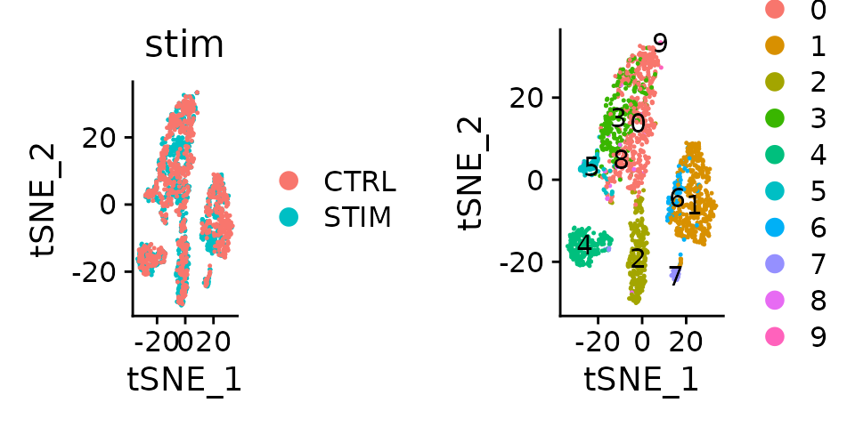
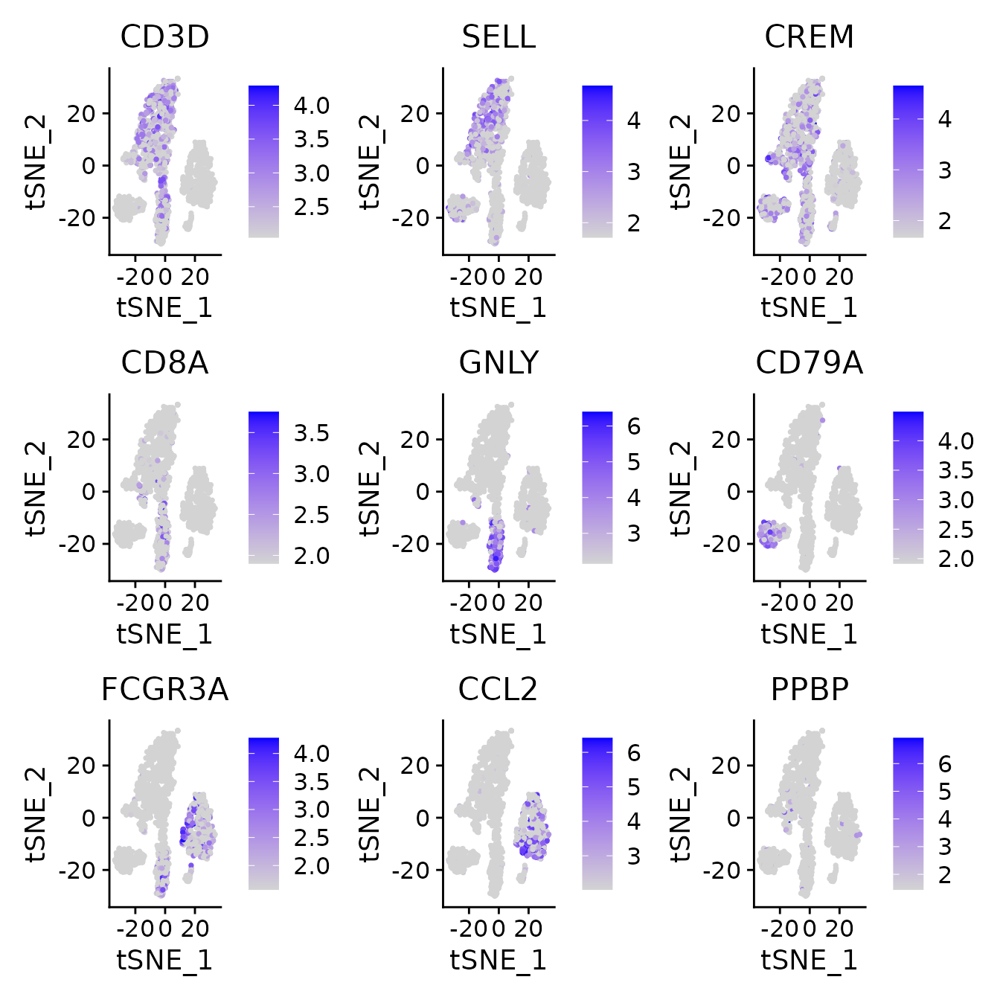
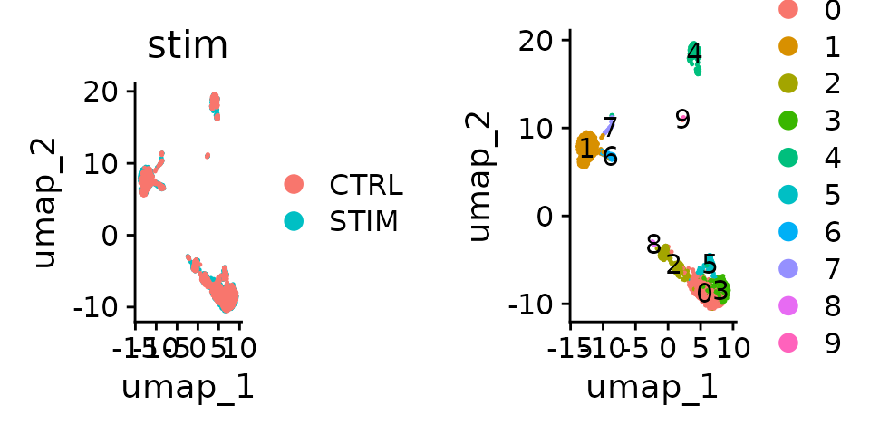

Introduction
This tutorial describes how to use harmony in Seurat v5 single-cell
analysis workflows. RunHarmony() is a generic function is
designed to interact with Seurat objects. This vignette will walkthrough
basic workflow of Harmony with Seurat objects. Also, it will provide
some basic downstream analyses demonstrating the properties of
harmonized cell embeddings and a brief explanation of the exposed
algorithm parameters.
Install Harmony from CRAN with standard commands.
install.packages('harmony')Generating the dataset
For this demo, we will be aligning two groups of PBMCs Kang et al., 2017. In this experiment, PBMCs are in stimulated and control conditions. The stimulated PBMC group was treated with interferon beta.
(Optional) Download original data
The example above contains only two thousand cells. The full Kang et al., 2017 dataset is deposited in the GEO. This analysis uses GSM2560248 and GSM2560249 samples from GSE96583_RAW.tar file and the GSE96583_batch2.genes.tsv.gz gene file.
library(Matrix)
## Download and extract files from GEO
##setwd("/path/to/downloaded/files")
genes = read.table("GSE96583_batch2.genes.tsv.gz", header = FALSE, sep = "\t")
pbmc.ctrl.full = readMM("GSM2560248_2.1.mtx.gz")
colnames(pbmc.ctrl.full) = paste0(read.table("GSM2560248_barcodes.tsv.gz", header = FALSE, sep = "\t")[,1], "-1")
rownames(pbmc.ctrl.full) = genes$V1
pbmc.stim.full = readMM("GSM2560249_2.2.mtx.gz")
colnames(pbmc.stim.full) = paste0(read.table("GSM2560249_barcodes.tsv.gz", header = FALSE, sep = "\t")[,1], "-2")
rownames(pbmc.stim.full) = genes$V1
library(Seurat)
pbmc <- CreateSeuratObject(counts = cbind(pbmc.stim.full, pbmc.ctrl.full), project = "PBMC", min.cells = 5)
pbmc@meta.data$stim <- c(rep("STIM", ncol(pbmc.stim.full)), rep("CTRL", ncol(pbmc.ctrl.full)))Running Harmony
Harmony works on an existing matrix with cell embeddings and outputs
its transformed version with the datasets aligned according to some
user-defined experimental conditions. By default, harmony will look up
the pca cell embeddings and use these to run harmony.
Therefore, it assumes that the Seurat object has these embeddings
already precomputed.
Calculate PCA cell embeddings
Here, using Seurat::NormalizeData(), we will be
generating a union of highly variable genes using each condition (the
control and stimulated cells). These features are going to be
subsequently used to generate the 20 PCs with
Seurat::RunPCA().
pbmc <- pbmc %>%
NormalizeData(verbose = FALSE)
VariableFeatures(pbmc) <- split(row.names(pbmc@meta.data), pbmc@meta.data$stim) %>% lapply(function(cells_use) {
pbmc[,cells_use] %>%
FindVariableFeatures(selection.method = "vst", nfeatures = 2000) %>%
VariableFeatures()
}) %>% unlist %>% unique
#> Finding variable features for layer counts
#> Finding variable features for layer counts
pbmc <- pbmc %>%
ScaleData(verbose = FALSE) %>%
RunPCA(features = VariableFeatures(pbmc), npcs = 20, verbose = FALSE)Perform an integrated analysis using harmony
To run harmony on Seurat object after it has been normalized, only one argument needs to be specified which contains the batch covariate located in the metadata. For this vignette, further parameters are specified to align the dataset but the minimum parameters are shown in the snippet below:
## run harmony with default parameters
pbmc <- pbmc %>% RunHarmony("stim")
## is equivalent to:
pbmc <- RunHarmony(pbmc, "stim")Here, we will be running harmony with some indicative parameters and plotting the convergence plot to illustrate some of the under the hood functionality.
pbmc <- pbmc %>%
RunHarmony("stim", plot_convergence = TRUE, nclust = 50, max_iter = 10, early_stop = T)
#> Transposing data matrix
#> Using automatic lambda estimation
#> Thetas: 2
#> Initializing state using k-means centroids initialization
#> Initializing centroids
#> Harmony 1/10
#> Harmony 2/10
#> Harmony 3/10
#> Harmony 4/10
#> Harmony 5/10
#> Harmony 6/10
#> Harmony 7/10
#> Harmony 8/10
#> Harmony converged after 8 iterations
By setting plot_converge=TRUE, harmony will generate a plot
with its objective showing the flow of the integration. Each point
represents the cost measured after a clustering round. Different colors
represent different Harmony iterations which is controlled by
max_iter (assuming that early_stop=FALSE). Here
max_iter=10 and up to 10 correction steps are expected.
However, early_stop=TRUE so harmony will stop after the
cost plateaus.
Harmony API parameters on Seurat objects
RunHarmony has several parameters accessible to users
which are outlined below.
group.by.vars (required)
A character vector that specifies all the experimental covariates to be corrected/harmonized by the algorithm.
When using RunHarmony() with Seurat, harmony will look
up the group.by.vars metadata fields in the Seurat Object
metadata.
For example, given the pbmc[["stim"]] exists as the stim
condition, setting group.by.vars="stim" will perform
integration of these samples accordingly. If you want to integrate on
another variable, it needs to be present in Seurat object’s
meta.data.
To correct for several covariates, specify them in a vector:
group.by.vars = c("stim", "new_covariate").
reduction.use
The cell embeddings to be used for the batch alignment. This
parameter assumes that a reduced dimension already exists in the
reduction slot of the Seurat object. By default, the pca
reduction is used.
dims.use
Optional parameter which can use a name vector to select specific dimensions to be harmonized.
Algorithm parameters

nclust
is a positive integer. Under the hood, harmony applies k-means
soft-clustering. For this task, k needs to be determined.
nclust corresponds to k. The harmonization
results and performance are not particularly sensitive for a reasonable
range of this parameter value. If this parameter is not set, harmony
will autodetermine this based on the dataset size with a maximum cap of
200. For dataset with a vast amount of different cell types and batches
this pamameter may need to be determined manually.
sigma
a positive scalar that controls the soft clustering probability
assignment of single-cells to different clusters. Larger values will
assign a larger probability to distant clusters of cells resulting in a
different correction profile. Single-cells are assigned to clusters by
their euclidean distance
to some cluster center
after cosine normalization which is defined in the range [0,4]. The
clustering probability of each cell is calculated as
where
is controlled by the sigma parameter. Default value of
sigma is 0.1 and it generally works well since it defines
probability assignment of a cell in the range
.
Larger values of sigma restrict the dynamic range of
probabilities that can be assigned to cells. For example,
sigma=1 will yield a probabilities in the range of
.
theta
theta is a positive scalar vector that determines the
coefficient of harmony’s diversity penalty for each corrected
experimental covariate. In challenging experimental conditions,
increasing theta may result in better integration results. Theta is an
expontential parameter of the diversity penalty, thus setting
theta=0 disables this penalty while increasing it to
greater values than 1 will perform more aggressive corrections in an
expontential manner. By default, it will set theta=2 for
each experimental covariate.
max_iter
The number of correction steps harmony will perform before completing
the data set integration. In general, more iterations than necessary
increases computational runtime especially which becomes evident in
bigger datasets. Setting early_stop=TRUE may reduce the
actual number of correction steps which will be smaller than
max_iter.
early_stop
Under the hood, harmony minimizes its objective function through a
series of clustering and integration tests. By setting
early_stop=TRUE, when the objective function is less than
1e-4 after a correction step harmony exits before reaching
the max_iter correction steps. This parameter can
drastically reduce run-time in bigger datasets.
Seurat specific parameters
These parameters are Seurat-specific and do not affect the flow of the algorithm.
project.dim
Toggle-like parameter, by default project.dim=TRUE. When
enabled, RunHarmony() calculates genomic feature loadings
using Seurat’s ProjectDim() that correspond to the
harmonized cell embeddings.
reduction.save
The new Reduced Dimension slot identifier. By default,
reduction.save="harmony". This option allows several
independent runs of harmony to be retained in the appropriate slots in
the SeuratObjects. It is useful if you want to try Harmony with multiple
parameters and save them as e.g. ‘harmony_theta0’, ‘harmony_theta1’,
‘harmony_theta2’.
Miscellaneous parameters
These parameters help users troubleshoot harmony.
plot_convergence
Option that plots the convergence plot after the execution of the
algorithm. By default FALSE. Setting it to
TRUE will collect harmony’s objective value and plot it
allowing the user to troubleshoot the flow of the algorithm and
fine-tune the parameters of the dataset integration procedure.
Accessing the data
RunHarmony() returns the Seurat object which contains
the harmonized cell embeddings in a slot named harmony.
This entry can be accessed via pbmc@reductions$harmony. To
access the values of the cell embeddings we can also use:
harmony.embeddings <- Embeddings(pbmc, reduction = "harmony")#Visualize harmony results
After Harmony integration, we should inspect the quality of the harmonization and contrast it with the unharmonized algorithm input. Ideally, cells from different conditions will align along the Harmonized PCs. If they are not, you could increase the theta value above to force a more aggressive fit of the dataset and rerun the workflow.
p1 <- DimPlot(object = pbmc, reduction = "harmony", pt.size = .1, group.by = "stim")
p2 <- VlnPlot(object = pbmc, features = "harmony_1", group.by = "stim", pt.size = .1)
plot_grid(p1,p2)
Evaluate harmonization of stim parameter in the harmony generated cell embeddings
Plot Genes correlated with the Harmonized PCs
DimHeatmap(object = pbmc, reduction = "harmony", cells = 500, dims = 1:3)
Using harmony embeddings for dimensionality reduction in Seurat
The harmonized cell embeddings generated by harmony can be used for
further integrated analyses. In this workflow, the Seurat object
contains the harmony reduction modality name in the method
that requires it.
Perform clustering using the harmonized vectors of cells
pbmc <- pbmc %>%
FindNeighbors(reduction = "harmony") %>%
FindClusters(resolution = 0.5)
#> Computing nearest neighbor graph
#> Computing SNN
#> Modularity Optimizer version 1.3.0 by Ludo Waltman and Nees Jan van Eck
#>
#> Number of nodes: 2000
#> Number of edges: 70985
#>
#> Running Louvain algorithm...
#> Maximum modularity in 10 random starts: 0.8701
#> Number of communities: 10
#> Elapsed time: 0 secondsTSNE dimensionality reduction
pbmc <- pbmc %>%
RunTSNE(reduction = "harmony")
p1 <- DimPlot(pbmc, reduction = "tsne", group.by = "stim", pt.size = .1)
p2 <- DimPlot(pbmc, reduction = "tsne", label = TRUE, pt.size = .1)
plot_grid(p1, p2)
t-SNE Visualization of harmony embeddings
One important observation is to assess that the harmonized data contain biological states of the cells. Therefore by checking the following genes we can see that biological cell states are preserved after harmonization.
FeaturePlot(object = pbmc, features= c("CD3D", "SELL", "CREM", "CD8A", "GNLY", "CD79A", "FCGR3A", "CCL2", "PPBP"),
min.cutoff = "q9", cols = c("lightgrey", "blue"), pt.size = 0.5)
Expression of gene panel heatmap in the harmonized PBMC dataset
UMAP
Very similarly with TSNE we can run UMAP by passing the harmony reduction in the function.
pbmc <- pbmc %>%
RunUMAP(reduction = "harmony", dims = 1:20)
#> Warning: The default method for RunUMAP has changed from calling Python UMAP via reticulate to the R-native UWOT using the cosine metric
#> To use Python UMAP via reticulate, set umap.method to 'umap-learn' and metric to 'correlation'
#> This message will be shown once per session
#> 17:54:45 UMAP embedding parameters a = 0.9922 b = 1.112
#> 17:54:45 Read 2000 rows and found 20 numeric columns
#> 17:54:45 Using Annoy for neighbor search, n_neighbors = 30
#> 17:54:45 Building Annoy index with metric = cosine, n_trees = 50
#> 0% 10 20 30 40 50 60 70 80 90 100%
#> [----|----|----|----|----|----|----|----|----|----|
#> **************************************************|
#> 17:54:45 Writing NN index file to temp file /tmp/Rtmplisena/filed75a02b3ba18d
#> 17:54:45 Searching Annoy index using 1 thread, search_k = 3000
#> 17:54:45 Annoy recall = 100%
#> 17:54:46 Commencing smooth kNN distance calibration using 1 thread with target n_neighbors = 30
#> 17:54:46 Initializing from normalized Laplacian + noise (using RSpectra)
#> 17:54:46 Commencing optimization for 500 epochs, with 83016 positive edges
#> 17:54:46 Using rng type: pcg
#> 17:54:48 Optimization finished
p1 <- DimPlot(pbmc, reduction = "umap", group.by = "stim", pt.size = .1)
p2 <- DimPlot(pbmc, reduction = "umap", label = TRUE, pt.size = .1)
plot_grid(p1, p2)
UMAP Visualization of harmony embeddings
sessionInfo()
#> R version 4.5.1 (2025-06-13)
#> Platform: x86_64-conda-linux-gnu
#> Running under: Arch Linux
#>
#> Matrix products: default
#> BLAS/LAPACK: /home/main/miniconda3/envs/Rmain/lib/libopenblasp-r0.3.30.so; LAPACK version 3.12.0
#>
#> locale:
#> [1] LC_CTYPE=en_US.UTF-8 LC_NUMERIC=C
#> [3] LC_TIME=en_US.UTF-8 LC_COLLATE=en_US.UTF-8
#> [5] LC_MONETARY=en_US.UTF-8 LC_MESSAGES=en_US.UTF-8
#> [7] LC_PAPER=en_US.UTF-8 LC_NAME=C
#> [9] LC_ADDRESS=C LC_TELEPHONE=C
#> [11] LC_MEASUREMENT=en_US.UTF-8 LC_IDENTIFICATION=C
#>
#> time zone: America/New_York
#> tzcode source: system (glibc)
#>
#> attached base packages:
#> [1] stats graphics grDevices utils datasets methods base
#>
#> other attached packages:
#> [1] future_1.67.0 cowplot_1.2.0 dplyr_1.1.4 Seurat_5.4.0
#> [5] SeuratObject_5.3.0 sp_2.2-1 harmony_2.0.0 Rcpp_1.1.0
#>
#> loaded via a namespace (and not attached):
#> [1] deldir_2.0-4 pbapply_1.7-4 gridExtra_2.3
#> [4] rlang_1.1.6 magrittr_2.0.4 RcppAnnoy_0.0.22
#> [7] spatstat.geom_3.7-0 matrixStats_1.5.0 ggridges_0.5.7
#> [10] compiler_4.5.1 png_0.1-8 systemfonts_1.3.1
#> [13] vctrs_0.6.5 reshape2_1.4.4 stringr_1.5.2
#> [16] pkgconfig_2.0.3 fastmap_1.2.0 labeling_0.4.3
#> [19] promises_1.3.3 rmarkdown_2.30 ggbeeswarm_0.7.2
#> [22] ragg_1.5.0 purrr_1.1.0 xfun_0.53
#> [25] cachem_1.1.0 jsonlite_2.0.0 goftest_1.2-3
#> [28] later_1.4.4 spatstat.utils_3.2-1 irlba_2.3.5.1
#> [31] parallel_4.5.1 cluster_2.1.8.1 R6_2.6.1
#> [34] ica_1.0-3 spatstat.data_3.1-9 bslib_0.9.0
#> [37] stringi_1.8.7 RColorBrewer_1.1-3 reticulate_1.45.0
#> [40] spatstat.univar_3.1-6 parallelly_1.45.1 lmtest_0.9-40
#> [43] jquerylib_0.1.4 scattermore_1.2 knitr_1.50
#> [46] tensor_1.5.1 future.apply_1.20.0 zoo_1.8-14
#> [49] sctransform_0.4.3 httpuv_1.6.16 Matrix_1.7-4
#> [52] splines_4.5.1 igraph_2.2.2 tidyselect_1.2.1
#> [55] abind_1.4-8 yaml_2.3.10 spatstat.random_3.4-4
#> [58] spatstat.explore_3.7-0 codetools_0.2-20 miniUI_0.1.2
#> [61] listenv_0.9.1 lattice_0.22-7 tibble_3.3.0
#> [64] plyr_1.8.9 withr_3.0.2 shiny_1.11.1
#> [67] S7_0.2.0 ROCR_1.0-12 ggrastr_1.0.2
#> [70] evaluate_1.0.5 Rtsne_0.17 fastDummies_1.7.5
#> [73] desc_1.4.3 survival_3.8-3 polyclip_1.10-7
#> [76] fitdistrplus_1.2-6 pillar_1.11.1 KernSmooth_2.23-26
#> [79] plotly_4.12.0 generics_0.1.4 RcppHNSW_0.6.0
#> [82] ggplot2_4.0.0 scales_1.4.0 globals_0.18.0
#> [85] xtable_1.8-4 RhpcBLASctl_0.23-42 glue_1.8.0
#> [88] lazyeval_0.2.2 tools_4.5.1 data.table_1.17.8
#> [91] RSpectra_0.16-2 RANN_2.6.2 fs_1.6.6
#> [94] dotCall64_1.2 grid_4.5.1 tidyr_1.3.1
#> [97] nlme_3.1-168 patchwork_1.3.2 beeswarm_0.4.0
#> [100] vipor_0.4.7 cli_3.6.5 spatstat.sparse_3.1-0
#> [103] textshaping_1.0.3 spam_2.11-3 viridisLite_0.4.2
#> [106] uwot_0.2.3 gtable_0.3.6 sass_0.4.10
#> [109] digest_0.6.37 progressr_0.16.0 ggrepel_0.9.6
#> [112] htmlwidgets_1.6.4 farver_2.1.2 htmltools_0.5.8.1
#> [115] pkgdown_2.2.0 lifecycle_1.0.4 httr_1.4.7
#> [118] mime_0.13 MASS_7.3-65